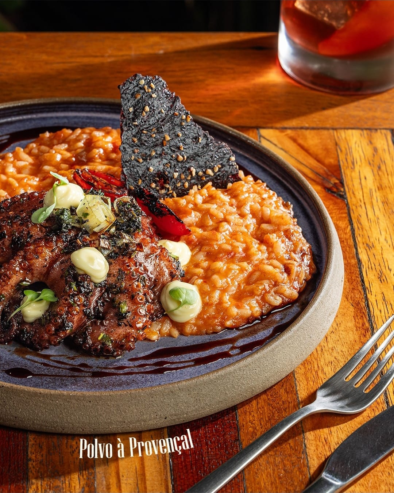

DA CASAPolvo à Provençal
ConsultePolvo grelhado, arroz cremoso e sabores marcantes para saborear sem pressa.
CABO BRANCO · JOÃO PESSOA
Sabores que contam histórias. Um lugar para chegar sem pressa e ficar à vontade.
 UM REFÚGIO NO CABO BRANCO
UM REFÚGIO NO CABO BRANCOA CASA PORTO 60
No Porto 60, a tradição brasileira encontra um olhar contemporâneo. Da primeira conversa à última taça, cada detalhe é pensado para transformar a refeição em um bom encontro.
Em Cabo Branco, João Pessoa, nossa casa recebe você em um ambiente acolhedor, cercado de verde e sabores feitos para ficar na memória.
Conheça nossa casaUM CLÁSSICO DA CASA
Ingredientes selecionados, preparo cuidadoso e aquele sabor que merece ser apreciado até a última garfada.
Explore o cardápioPOR DENTRO DA EXPERIÊNCIA
SUA PRÓXIMA BOA MEMÓRIA
Escolha o melhor momento. Nossa equipe confirma sua reserva pelo WhatsApp.
VAMOS NOS ENCONTRAR?
Na Rua Antônio Carlos Araújo, em Cabo Branco. Esperamos por você.
Terça a domingo · 12h às 15h
Terça a quinta · 19h às 23h
Sexta e sábado · 19h às 00h
Segunda-feira: fechado